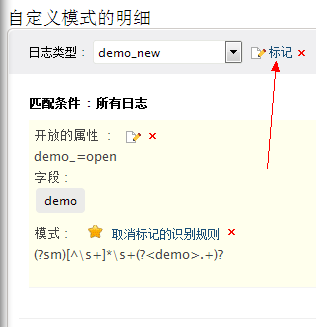

日志分析的自定义模式
怎么编辑自定义模式？
点击编辑/删除菜单将会打开自定义模式的明细页面，这里将会显示出所有创建的模式。
当您将鼠标放置到字段名上时，编辑图标将会显示出来，您可以点击此图标编辑字段的名称。
- 点击字段编辑图标编辑字段的名称。
可以编辑日志类型的显示名称。
- 点击日志类型编辑图标来编辑日志类型的显示名称。
怎么删除自定义模式？
当您将鼠标放置到字段名或模式上时，删除图标将会显示出来。
-
点击日志类型删除图标将会删除新的日志类型，删除日志类型会删除特定日志类型的解析规则。
-
点击字段删除图标将会删除新的字段。
-
点击模式删除图标将会删除新的模式。
怎么将一种日志类型指派为另一种日志类型？
一种日志类型可以指派为另一种日志类型，这种情况下，将不会显示和应用真实日志类型的解析规则，这里将会显示和应用被指派的日志类型的解析规则。请参阅以下产品截图，了解如何指派日志类型：

怎么添加开放的属性？
如果没有为新的字段添加开放的属性，您可以在这里添加。请参阅以下产品截图，了解如何添加开放的属性：
怎样编辑、删除开放的属性？
怎样将自定义模式标记为对应用户定义的日志类型的判断规则？
自定义模式（解析规则）可以标记或取消标记为用户自定义日志类型的判断规则，您可以为指定用户定义的日志类型标记多个自定义模式。如果这里没有为用户定义的日志类型定义判断模式，那么消息“此日志类型无可用的判断规则，请标记至少一个模式作为判断条件”将会显示在自定义模式的明细页面。如果您将鼠标防止在模式字段上，菜单选项将会显示出来，您执行标记为判断规则或删除操作。
所有模式
在自定义模式的明细页面，所有创建的模式将会显示出来。这里您可以看到模式所属的日志类型，应用模式需匹配的条件，字段名称及其编辑和删除选项，以及模式的删除选项。 |